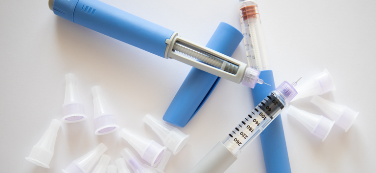

Saúde
Ministério da Saúde inicia entrega de insulina análoga de ação rápida a Estados e o Distrito Federal.
Ministério da Saúde iniciou nesta quinta-feira (29), a distribuição da insulina análoga de ação rápida para todo o País. Hoje, sexta (30), serão distribuídas mais de 258 mil unidades do medicamento para atender emergencialmente a necessidade dos Estados e do Distrito Federal (DF). O montante em distribuição faz parte de um total de mais de 400 mil unidades de insulina análoga de ação rápida adquirida pela pasta.
Leia mais...Mais Médicos: 70% dos profissionais selecionados já se apresentaram nos municípios
Entre os médicos selecionados no primeiro edital do programa Mais Médicos, cerca de 70% já confirmaram interesse na vaga para a qual foram indicados e se apresentaram nos municípios. O número representa 4.107 profissionais que irão atuar na Atenção Primária à Saúde, porta de entrada do SUS, em todas as regiões do Brasil. A maior parte dos profissionais está concentrada na região Norte. No primeiro edital desde a retomada do programa pelo Governo Federal, foram disponibilizadas 5.968 vagas para garantir o acesso à saúde principalmente nos vazios assistenciais do país. Para o preenchimento das vagas remanescentes, o Ministério da Saúde divulgou os profissionais selecionados para a 2ª chamada do edital.
Leia mais...Ministério da Saúde orienta gestores sobre laqueadura e vasectomia no SUS
Uma das principais instruções é que os gestores de saúde reorganizem os serviços, tanto na Atenção Primária quanto na Especializada (ambulatorial e hospitalar), de forma a cumprir o prazo máximo de 30 dias para disponibilização dos diversos métodos e técnicas de contracepção no âmbito do planejamento familiar. O processo deve ser acompanhado de avaliação clínica e oferta de informações sobre as necessidades de cada pessoa.
Leia mais...